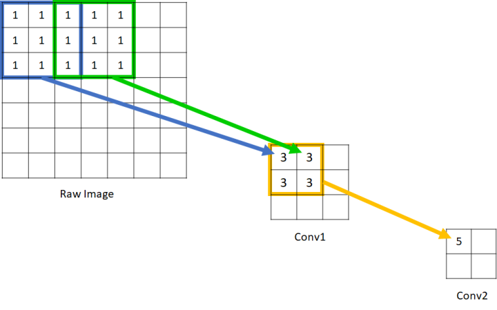

10. 特征图与感受野¶
特征图：feature map。
感受野：receptive field。
10.1. 特征图¶
输入：\(C_{in} \times H_{in} \times W_{in}\)
卷积核：\(size = k \times k,\ padding = p,\ stride = s\)
输出：\(C_{out} \times H_{out} \times W_{out}\)
计算量：\(C_{out} \times H_{out} \times W_{out} \times k \times k \times C_{in}\)
卷积
\[\begin{split}H_{out} = \lfloor \frac{H_{in} - k + 2 * p}{s} \rfloor + 1 \\ W_{out} = \lfloor \frac{W_{in} - k + 2 * p}{s} \rfloor + 1\end{split}\]反卷积
\[\begin{split}H_{out} = (H_{in} - 1) \times s + k \\ W_{out} = (W_{in} - 1) \times s + k\end{split}\]
10.2. 感受野¶
感受野，用来表示网络内部的不同位置的神经元对 原图像 的感知范围的大小。
{kind=link}
从前往后推
设 \(R_n\) 表示第 \(n\) 层卷积层的感受野的大小，卷积核：\(size = k_n \times k_n,\ stride = s_n\) 。
\[\begin{split}R_n &=&\ R_{n-1} + (k_n - 1) \prod_{i=1}^{n-1} s_i \\ R_1 &=&\ k_1\end{split}\]从后往前推
设 \(r_n\) 表示输出层（ \(N\) ）在第 \(n\) 层输入特征图的感知范围的大小，第 \(n\) 层卷积核：\(size = k_n \times k_n,\ stride = s_n\) 。
最后一层在原图的感受野为 \(r_1\) 。
\[\begin{split}r_n &=&\ (r_{n+1} - 1) \times s_n + k_n \\ r_N &=&\ k_N\end{split}\]
10.3. 参考资料¶
- feature map大小计算方法
- 卷积神经网络CNN（1）——图像卷积与反卷积（后卷积，转置卷积）
- 深度神经网络中的感受野(Receptive Field)
- 卷积神经网络中感受野的详细介绍